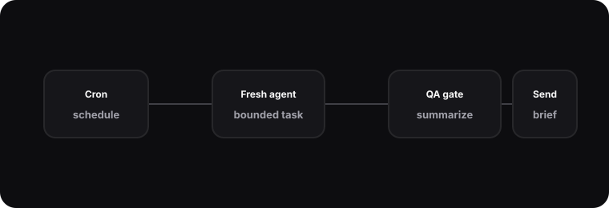

Autonomous agents & cron
Scheduled agent runs for briefs, QA sweeps, and maintenance loops.

Why schedule agents
Some assistant work should not wait for a prompt. A daily news brief is useful because it arrives before I ask. A weekly mission-control summary is useful because it forces a review cadence. A QA sweep is useful because it catches drift when I am not looking at the system.
Hermes uses scheduled runs for bounded jobs. The schedule starts a fresh session, injects the objective, loads only the needed context, and delivers the result to a visible target. I want autonomy that leaves artifacts, not autonomy that silently changes the world.
Boundaries
The most important design choice is scope. A scheduled agent should have a narrow objective, a known output format, and a clear stop condition. “Summarize the week” is workable. “Improve my life” is not. The smaller the objective, the easier it is to inspect the result and decide whether the automation is earning trust.
I also prefer delivery over mutation. Many scheduled jobs produce a brief, a checklist, or a proposed patch rather than immediately changing durable state. When a job does write memory, it should write a concise summary and make that change reviewable.
# illustrative
def run_scheduled_job(job):
session = sessions.fresh(kind="cron", name=job.name)
context = memory.retrieve(job.context_query)
report = agent.run(session, objective=job.objective, context=context)
delivery.send(job.target, report.summary)Reliability
Cron is simple, but the surrounding system still needs operational care. Jobs should be idempotent where possible. Failures should be visible. Logs should identify which job ran, which context was loaded, and where the output went. If an agent run depends on an external API, the failure message should say that plainly instead of pretending the job completed.
Running on a personal Linux workstation keeps the system honest. I care about systemd units, restart behavior, resource usage, and degraded modes because the machine is real hardware, not an abstract demo environment.
The most useful scheduled jobs are modest. A daily brief can summarize the outside world and call out what deserves attention. A weekly mission-control run can review open loops and suggest priorities. An autonomous QA job can inspect a repo and report suspicious changes without immediately rewriting code. These are small loops, but they compound because they happen consistently.
I also design for interruption. If a scheduled run fails halfway through, the next run should not inherit a confusing partial state. If it produces a report, the report should include enough metadata to understand when it ran and what it considered. That makes autonomy easier to trust because the system leaves a trail.
What I learned
Autonomy is less about letting agents do anything and more about designing small loops that can be trusted. A scheduled agent should be easy to explain: when it runs, what it reads, what it can change, and who sees the result. That clarity is what makes the system feel operational instead of mysterious.
The best scheduled jobs are closer to reliable coworkers than invisible scripts. They show up on time, produce a clear artifact, and make it obvious when something went wrong. That standard keeps the automation practical and keeps me willing to depend on it.
That is the real engineering bar for this project: not whether an agent can act alone once, but whether it can run repeatedly, explain itself, and leave the system easier to understand afterward every week.